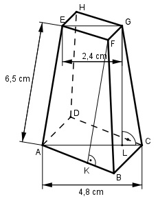

Aufgabe 264 Wie groß sind das Volumen V und die Oberfläche O des dargestellten quadratischen Pyramidenstumpfes?

Satz von Pythagoras im Dreieck ABC: AB = BC AC2 = AB2 + BC2 = 2 * AB2 |:2 AC2 4,82 cm2 AB2 = ------ = ----------- = 11,52 cm2 |√ 2 2 AB = 3,4 cm Satz von Pythagoras im Dreieck EFG: EF = FG EG2 = EF2 + FG2 = 2 * EF2 |:2 EG2 2,42 cm2 EF2 = ------ = ----------- = 2,88 cm2 |√ 2 2 EF = 1,7 cm Satz von Pythagoras im Dreieck LBG: AE = CG AC - EG 4,8 cm - 2,4 cm LC = ----------- = ------------------- = 1,2 cm 2 2 CG2 = LC2 + LG2 |- LC2 LG2 = CG2 - LC2 = 6,52 - 1,22 cm2 = 40,812 |√ LG = 6,39 cm VStumpf = 6,39 V = ------ * (3,42 + 3,4 * 1,7 + 1,72) cm3 3 6,39 V = ------ * (11,56 + 5,78 + 2,89) cm3 3 = 43,1 cm3 Satz von Pythagoras im Dreieck KBF: AB - EF 3,4 cm - 1,7 cm KB = --------- = ----------------- = 0,85 cm 2 2 BF2 = KF2 + KB2 |-KB2 KF2 = BF2 - KB2 = 6,52 - 0,852 cm2 = 41,532 |√ KF = 6,44 cm AB + EF O = 4 * --------- * KF + AB2 + EF2 2 O = 3,42 cm2 + 1,72 cm2 + 3,4 cm + 1,7 cm + 4 * ----------------- * 6,44 cm 2 O = 80,1 cm2